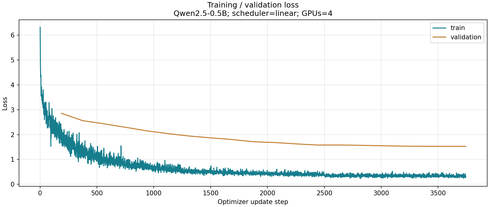
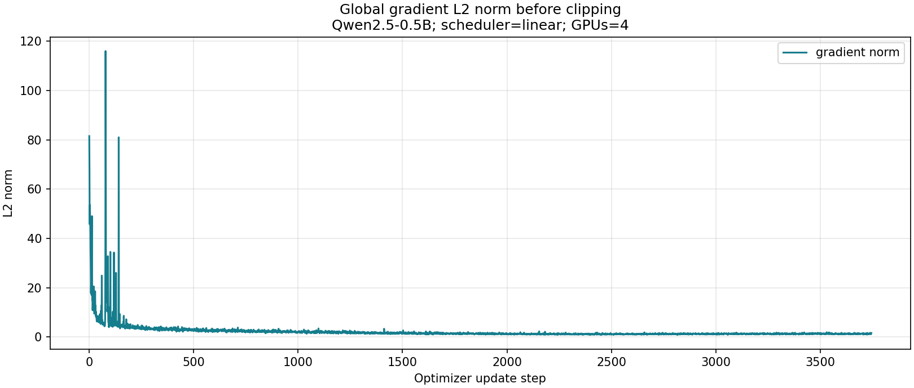
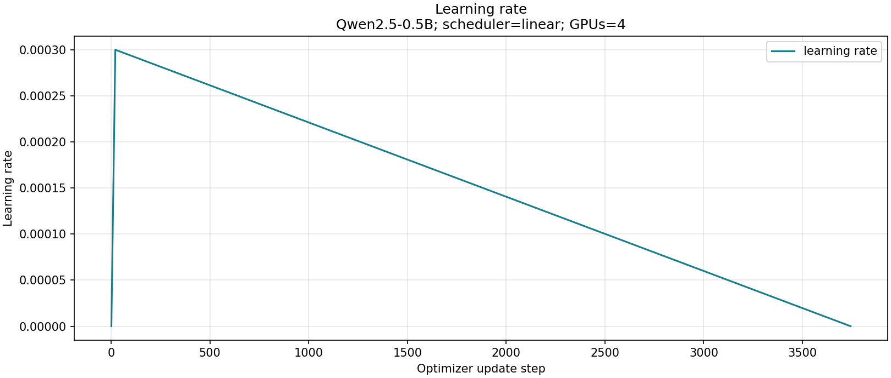
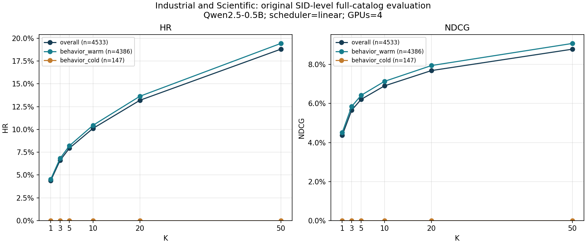
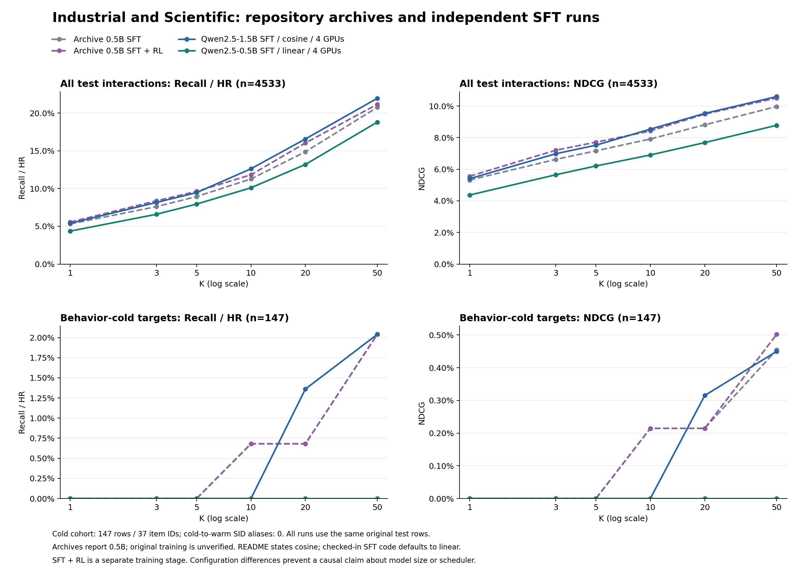

Industrial_and_Scientific 原项目 SFT 实验
北京时间 2026-11-16T17:32:45.042206+08:00 · 训练：completed · 全量验证：passed
复用原始 SID 与数据划分，历史长度1–10；全量商品目录、beam=50、逐原始测试行计算。未运行 RL。
训练 PDF · 验证 PDF · 训练 JSON · 验证 JSON · 分组 CSV
训练
| 项目 | 记录 |
|---|
| 底模 | /mnt/ossdata/ziweizhao/weights/Qwen2.5-0.5B |
| 训练状态 | completed |
| 实际配置 | Qwen2.5-0.5B; scheduler=linear; GPUs=4 |
| 最佳 checkpoint | /mnt/ossdata/ziweizhao/weights/checkpoints/MiniOneRec/Industrial_and_Scientific_enddonkey_05b_linear/sft/checkpoint-3572 |
| 梯度统计 | {'count': 3744, 'mean': 2.184959476829594, 'max': 116.0, 'last100_mean': 1.2645703125} |
训练与验证 loss

梯度范数

学习率

整体、冷暖组与 SID 冲突诊断
行为冷按训练行为中的商品 ID 判定，商品仍可参加全目录 SID↔文本辅助训练。HR 在单目标协议下等同 Recall。
| 项目 | 实际值 |
|---|
| 完整测试行 | 4533 |
| 商品数 / 唯一 SID | 3686 / 3670 |
| 冲突 SID 组 / 涉及商品 | 15 / 31 |
| 行为冷商品数 | 37 |
| 冷目标与暖商品共用 SID 的行数 | 0 |
| 分组 | 样本数 | HR@10 | NDCG@10 | HR@50 |
|---|
| overall | 4533 | 10.10368% | 6.90377% | 18.79550% |
| behavior_warm | 4386 | 10.44232% | 7.13515% | 19.42544% |
| behavior_cold | 147 | 0.00000% | 0.00000% | 0.00000% |
| repeat_last | 122 | 83.60656% | 66.52513% | 94.26230% |
| not_repeat_last | 4411 | 8.07073% | 5.25475% | 16.70823% |
| collision_free | 4216 | 6.73624% | 4.01348% | 15.37002% |
| collision_affected | 317 | 54.88959% | 45.34363% | 64.35331% |
| behavior_cold_collision_free | 147 | 0.00000% | 0.00000% | 0.00000% |
| behavior_cold_collision_affected | 0 | — | — | — |
原始 SID 冲突意味着部分商品不可区分；主指标沿用原项目 SID 匹配，同时给出无冲突子组。冷暖、重复与冲突分层维度会重叠，不能把所有行数相加。

复现仓库 SFT-only 对照
The primary benchmark is Enddonkey/MiniOneRec-Reproduction README SFT Only, self-reported and not independently verified. It reports Qwen2.5-0.5B Base on one A800 with cosine scheduling. This run records Qwen2.5-0.5B; scheduler=linear; GPUs=4; epochs=3; global batch=64. The actual run_config.json governs this run's settings. Score differences do not establish an exact reproduction.
参考值来自仓库 README 自报结果，未经本实验独立复核；本次底模、GPU数量与调度器均以实际记录为准，设置差异需一并比较。
Enddonkey/MiniOneRec-Reproduction 复现实验报告
| K | 仓库 SFT-only HR | 仓库 SFT-only NDCG |
|---|
| 1 | 5.32000% | 5.32000% |
| 3 | 7.61000% | 6.63000% |
| 5 | 8.93000% | 7.16000% |
| 10 | 11.27000% | 7.92000% |
| 20 | 14.87000% | 8.81000% |
| 50 | 20.76000% | 9.97000% |
最终结果：0.5B linear 四卡复现
已完成3轮、3744步，训练约12分钟。原始与本次全部3744步学习率逐项一致，均为linear；本次使用CPU初始化新增SID、无DeepSpeed/梯度检查点/额外训练前验证、全局batch64。最佳验证loss：原日志1.514723，本次1.526506，均在3572步。四卡、GPU型号和部分环境仍与原单卡有差异。
| 模型 | 整体HR@10 | 整体NDCG@10 | 冷组HR@10 | 冷组NDCG@10 | 冷组HR@50 | 冷组NDCG@50 |
|---|
| 原仓库0.5B SFT，归档预测复算 | 11.2729% | 7.9159% | 0.6803% | 0.2146% | 2.0408% | 0.4545% |
| 此前1.5B cosine四卡 | 12.6186% | 8.5369% | 0% | 0% | 2.0408% | 0.4499% |
| 本次0.5B linear四卡 | 10.1037% | 6.9038% | 0% | 0% | 0% | 0% |
同一147条、37商品行为冷组，K=1/3/5/10/20/50均零命中。为交叉核对，直接执行未修改的原evaluate.py、LogitProcessor.py和data.py，在相同新checkpoint上单卡评估全部147条冷样本（beam50,max_new_tokens256），仍为各K零命中。原模型命中的第1012行目标，原SFT排8、此前1.5B排18、本次未进入Top50。换回0.5B并对齐linear尚未恢复原冷组命中；目前无法把差异归因于唯一训练因素。

完整对照CSV · 训练过程审计 · 未修改原评测器交叉核对 · 结论JSON